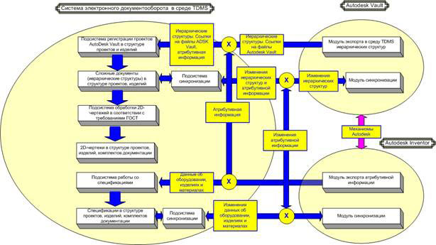
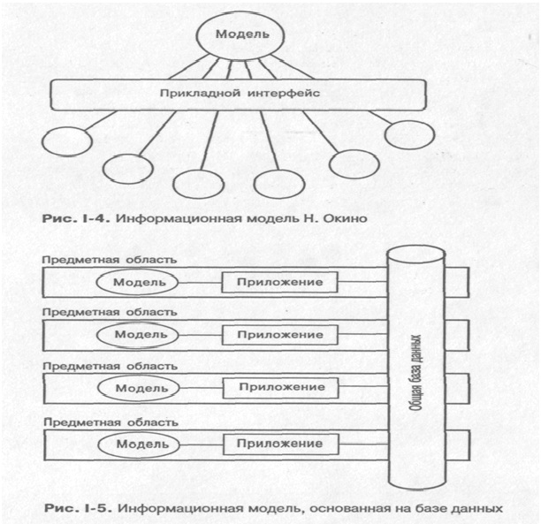
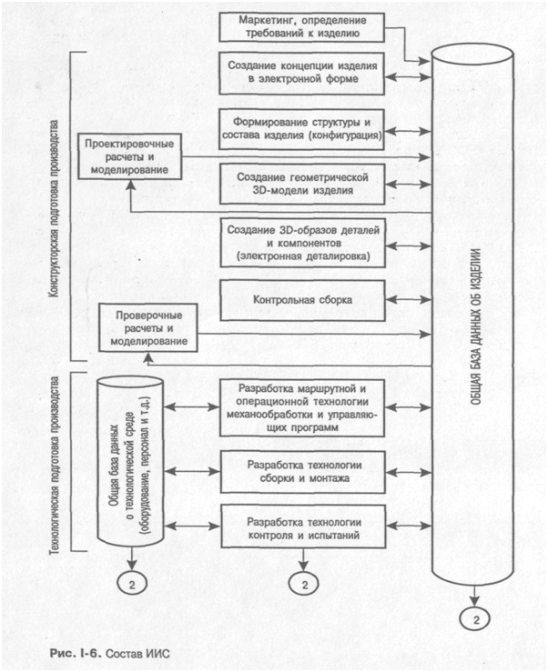
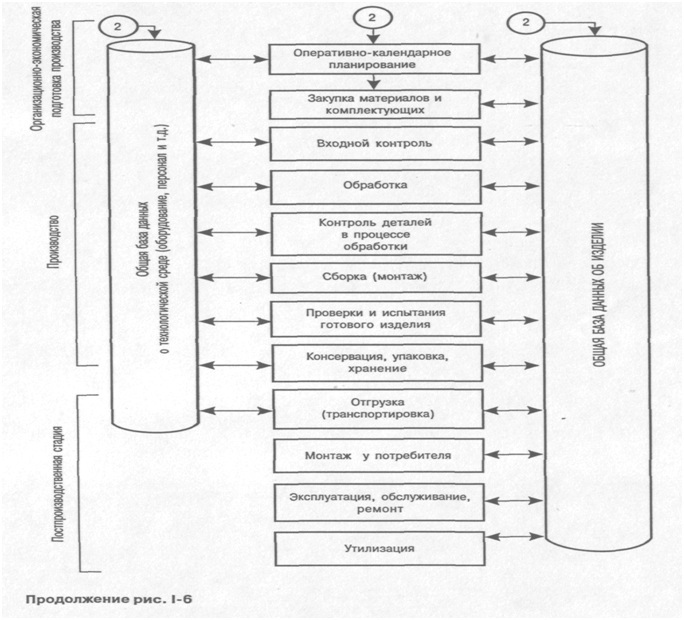
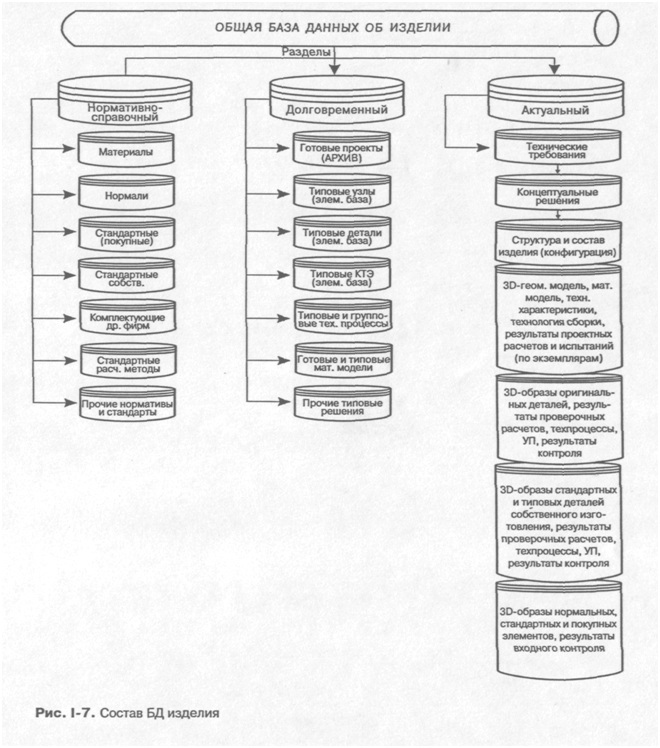
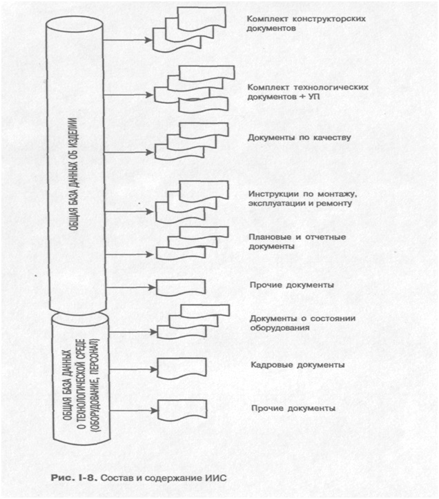

Интегрированная информационная среда предприятия

Интегрированная информационная среда предприятия
Общее представление об ИИС
Как следует из концептуальной модели и уже отмечено выше, основой, ядром ИПИ-технологий и создаваемых на этой основе автоматизированных систем является ИИС. Представление об ИИС было введено в научный обиход задолго до появления ИПИ-технологий. Еще в 1983 г. японский ученый Н. Окино опубликовал труды, где утверждал: производство материальных объектов и сопутствующие ему процессы проектирования, технологической подготовки и управления так сильно отличаются от других видов деятельности человека, что им должна отвечать особая архитектура программно-методического, математического и информационного обеспечения. По мнению Окино, принципиальная разница между обработкой информации в производственной системе и в других случаях применения вычислительной техники сводится к двум положениям.
Производство и все процессы в нем принадлежат физическому миру, а процессы, протекающие в компьютере, - миру информации. Следовательно, необходимо преобразование производственных проблем в информационные, а также обратный переход из информационного мира в физический. По сути, это проблема адекватного моделирования, т. е. установления соответствия (по возможности взаимнооднозначного) физического и информационного пространства. Согласно идее Окино, при создании традиционного математического обеспечения для решения вычислительных задач в центр разработки ставится единственная математическая модель проблемы, которая через прикладной интерфейс адаптируется к различным областям применения (рис. 1-4). Такой подход к решению производственных проблем практически не реализуем, поскольку ввиду их сложности и многообразия единую модель создать невозможно.
Если в дополнение к изучавшимся Н. Окино производственным проблемам включить в рассмотрение еще и проблемы поставок, эксплуатации, обслуживания и ремонта изделий, т. е. все постпроизводственные стадии ЖЦ, то ситуация становится еще более сложной.
В связи с отмеченными выше недостатками традиционного подхода предлагается отбросить стратегию единственной модели и перейти к стратегии, суть которой показана на рис. 1-5.

Здесь роль ядра системы играет не модель, а общая (интегрированная) база данных (ОВД), к которой могут обращаться различные проблемно-ориентированные модели, реализованные в форме программных приложений. Предполагается, что в ОВД хранятся информационные объекты (ИО), адекватно отображающие в информационном мире сущности физического мира: предметы, материалы, изделия, процессы и технологии, разнообразные документы, финансовые ресурсы, персонал подразделения и оборудование предприятия-изготовителя, эксплуатанта, сервисной и ремонтной служб и т. д. Упомянутые выше приложения обращаются в ОБД, находят в ней необходимые ИО, обрабатывают их и помещают в ОБД результаты этой обработки.
В какой-то мере Н. Окино предвосхитил появление объектно-ориентированного подхода, предложив рассматривать все, что происходит в информационном мире, на основе дуализма «объект - операция».
Суть развиваемых в трудах Окино идей состоит в следующем. Любой сущности физического мира соответствует ИО, представляющий некоторый набор данных. Любой вид использования физической сущности, ее преобразование в другую сущность (или в ту же сущность, но с иными значениями параметров) - обработка, изготовление, измерение, проектирование - в информационном мире отображается операцией (командой, программой). Дальнейшее развитие ИТ привело к появлению объектно-ориентированного подхода, позволившего адекватно перевести многие процессы, протекающие на предприятии, в виртуальное информационное пространство, что и сделало актуальной всю проблематику, связанную с использованием ИПИ-технологий.
Сказанное относится, в частности, к процессам конструкторской и технологической подготовки производства, в ходе которых создается техническая документация различных видов и назначения, к процессам управления на всех уровнях, в которых по необходимости приходится иметь дело с большими объемами разнообразной информации. Сегодня эти процессы в значительной мере состоят из операций создания, преобразования, транспортировки и хранения информационных объектов в рамках ИИС.
Структура и состав ИИС


ИИС представляет собой хранилище данных, содержащее все сведения, создаваемые и используемые всеми подразделениями и службами предприятия - участниками ЖЦ изделия - в процессе их производственной деятельности. Это хранилище имеет сложную структуру и многообразные внешние и внутренние связи.
ИИС должна включать в свой состав две базы данных: общую базу данных об изделии (изделиях) (ОБДИ) и общую базу данных о предприятии (ОБДП).
На рис. 1-6 представлена структура ИИС во взаимодействии с процессами ЖЦ продукции предприятия. На рисунке показано, что в этих процессах используется информация, содержащаяся в ИИС, а ИО, порождаемые в ходе процессов, возвращаются в ИИС для хранения и последующего использования в других процессах - это показано двойными стрелками. С ОБДИ связаны процессы на всех стадиях ЖЦ изделия. ОБДП информационно связана с технологической и организационно-экономической подготовкой производства и собственно производством (включая процессы отгрузки и транспортировки готовой продукции).
При создании нового изделия и технологической подготовке его производства средствами конструкторских и технологических САПР (САЕ/ CAD/САМ) в ИИС создаются ИО, описывающие структуру изделия, его состав и все входящие компоненты: детали, подузлы, узлы, агрегаты, комплектующие, материалы и т. д. Каждый ИО обладает атрибутами, описывающими свойства физического объекта: технические требования и условия, геометрические (размерные) параметры, массогабаритные показатели, характеристики прочности, надежности, ресурса и другие свойства изделия и его компонентов.
ИО в составе ОБДИ содержат в произвольном формате информацию, требуемую для выпуска и поддержки технической документации, необходимой на всех стадиях ЖЦ для всех изделий, выпускаемых предприятием. Каждый ИО идентифицируется уникальным кодом и может быть извлечен из ОБДИ для выполнения действий с ним. ОБДИ обеспечивает информационное обслуживание и поддержку деятельности:
• заказчиков (владельцев) изделия;
• разработчиков (конструкторов), технологов, управленческого и производственного персонала предприятия-изготовителя;
• эксплуатационного и ремонтного персонала заказчика и специализированных служб.
Более подробно состав ИО, входящих в ОБДИ, раскрыт на схеме (рис. 1-7), согласно которой в составе ОБДИ можно условно выделить три раздела:
• нормативно-справочный;
• долговременный;
• актуальный.
• В нормативно-справочном разделе должны храниться ИО, содержащие следующие данные:
• о конструкционных материалах;
• о нормализованных деталях (нормалях);
• о стандартных (покупных) комплектующих изделиях;
• о стандартных деталях собственного изготовления;
• о стандартных расчетных методах;
• о государственных, международных и внутренних стандартах;
• о прочих нормативных документах.
Содержание нормативно-справочного раздела ОБДИ обновляется по мере поступления новых и отмены действующих нормативных документов.
В долговременном разделе должны храниться ИО, содержащие данные, аккумулирующие собственный опыт предприятия:
• о ранее выполненных готовых проектах (архив);
• о типовых узлах и агрегатах собственного производства;
• о типовых деталях собственного производства;
• о типовых конструктивно-технологических элементах (КТЭ) деталей;
• о типовых и групповых технологических процессах;
• о типовой технологической оснастке и инструменте;
• о готовых и типовых расчетных методиках и математических моделях изделий собственной разработки;
• о прочих готовых и типовых решениях.
Долговременный раздел ОБДИ дополняется и обновляется по мере появления новых технических решений, признанных типовыми и пригодными для дальнейшего использования.
В актуальном разделе (самом большом по объему и самом сложном по структуре) должны храниться ИО, содержащие данные об изделиях, находящихся на различных стадиях ЖЦ:
• о конструкции и версиях текущих изделий;
• о технологии изготовления изделий;
• о конкретных экземплярах и партиях изделий в производстве;
• о конкретных экземплярах и партиях изделий, находящихся на постпроизводственных стадиях ЖЦ.
Структура этого раздела показана на рис. 1-7 весьма приблизительно и требует развития и уточнения в каждом конкретном случае, а также разбивки на дополнительные подразделы (классификационные уровни).

Использование на предприятии
Как уже отмечалось, кроме ИО, относящихся (прямо или косвенно) к изделиям, в ИИС содержится информация о предприятии: о производственной и управленческой структуре, технологическом и вспомогательном оборудовании, персонале, финансах и т. д. Вся совокупность этих данных образует ОБДП, которая также состоит из нескольких разделов:
• экономика и финансы,
• внешние связи предприятия,
• производственно-технологическая среда предприятия,
• система качества.
В разделе, посвященном экономике и финансам, должны храниться ИО, содержащие сведения:
• о конъюнктуре рынка изделий предприятия, включая цены и их динамику;
• о состоянии финансовых ресурсов предприятия;
• о ситуации на фондовом и финансовом рынках (курсы акций предприятия, биржевые индексы, процентные ставки, валютные курсы и т. д.);
• о реальном и прогнозируемом портфеле заказов;
• прочие сведения финансово-экономического и бухгалтерского характера.
В разделе, посвященном внешним связям предприятия, должны храниться ИО, содержащие сведения о фактических и возможных поставщиках и потребителях (заказчиках); раздел формируется и используется в процессе маркетинговых исследований.
В разделе, посвященном производственно-технологической среЗе предприятия, должны храниться ИО, содержащие сведения:
• о производственной структуре предприятия;
• о технологическом, вспомогательном и контрольно-измерительном оборудовании;
• о транспортно-складской системе предприятия;
• об энерговооруженности предприятия;
• о кадрах;
• о делопроизводстве;
• прочие данные о предприятии.
В разделе, посвященном системе качества, должны храниться ИО, содержащие сведения:
• о структуре действующей на предприятии системы качества;
• о действующих на предприятии стандартах по качеству;
• о международных и российских стандартах по качеству;
• о должностных инструкциях в области качества;
• прочие сведения по системе качества.
Из ИИС могут быть извлечены разнообразные документы, необходимые для функционирования предприятия. Документы могут быть представлены как в электронном, так и в традиционном бумажном виде (рис. 1-8).
Приведенные выше состав и содержание разделов ИИС подлежат уточнению в ходе выполнения проектов по внедрению ИПИ-техно-логий на конкретных предприятиях.
Системная организация ИИС
Основной задачей, решаемой многопользовательской системой, является обеспечение возможности разграниченного доступа каждого пользователя системы к ее сетевым ресурсам. Специалистами ведутся работы в сетевом варианте, где находит свое организованное место каждая служба.
Сеть организации изначально предназначена для обеспечения взаимодействия всех служб. Это подразумевает не только передачу в электронном виде всех документов типа приказов, распоряжений, служебных, докладных, но и создание разнообразных баз данных для управления производством, сбор информации и обмен файлами по проектированию выпускаемого продукта, а также файлами отчетности и выходной документации.
Сеть также расширяет возможности использования периферийного оборудования, пользователи получают возможность работать с общими принтерами, плоттерами и различными внешними накопителями информации.
Использование виртуальных сетей и доменной структуры позволяет разделить пользователей на группы и категории по структуре деятельности, однако это не устраняет возможности обмена данными через общее дисковое пространство на корпоративных серверах.
Ввод в эксплуатацию специализированных серверов (почтовых, архивирующих, SQL, Web) и дополнительных сетевых служб позволяет свести к минимуму задержки, связанные с передачей, получением, обновлением и сохранностью информации, а также с обеспечением различного уровня доступа к ней. Субъектами сети являются все работники организации, получившие доступ к ресурсам корпоративной сети на основании официально утвержденных документов. Субъекты сети подразделяются на три основные группы:

• группа пользователей - отделы и подразделения организации. Состоит из пользователей сети и ответственных по подразделениям организации. Ответственные пользователи обеспечивают ведение сетевых проектов с определением уровней доступа к информации;
• группа управления - специализированный отдел организации. Осуществляет обслуживание и поддержку работы всех систем корпоративной сети организации. Состоит из администраторов сети, операторов сети, системных программистов, электроников по обслуживанию серверов, электроников по обслуживанию активного сетевого оборудования, электроников по обслуживанию компьютерной техники;
• группа контроля - осуществляет контроль и надзор за работой пользователей в целом.
Для работы каждого субъекта в сети создается учетная запись пользователя, защищенная паролем. Каждый субъект корпоративной сети имеет строго определенные права и обязанности, за нарушение которых несет дисциплинарную, административную, а в отдельных случаях и уголовную ответственность, определенную положениями и документами организации и законодательством РФ. Данные правила позволяют организовать корректную работу всех субъектов сети в многопользовательском режиме.
Разумеется, описанные правила обуславливают глобальную систему для решения всего круга задач. Несомненно, возможны промежуточные решения, являющиеся частью общего подхода, которые позволят подготовить техническую систему для конкретного варианта решения стоящей перед организацией проблемы. Допустим, в небольших (по количеству работников и объему выпускаемой продукции) организациях возможно выполнение работ одним работником: например, группа управления в лице одного системного администратора. Правильная компоновка позволит избежать излишних затрат. Но следует помнить, что излишняя загрузка задачами одного исполнителя отражается не просто на уровне исполнения, но и на развитии направления в целом.
Еще одним аспектом создания ИИС является необходимость работы с изделиями, создаваемыми несколькими организациями либо одной с территориально разнесенными подразделениями. Данная проблема весьма существенна, поскольку в этом случае затрудняются процедуры обмена информации при создании системы и ее обновлениях. Надежная корпоративная связь всех разработчиков базируется на несколько иных принципах, чем система в одной отдельно взятой организации.
Такие факторы, как разница во времени, скорость работы, формируют требования к системе:
• взаимодействие через каналы интернета;
• регулярное и плановое обновление информации.
Особое внимание уделяется единству ядра программного обеспечения, служащему для надежности обмена информацией не только в одной организации, но и между различными фирмами. Ниже представлен пример взаимодействия корпораций с мировым именем на базе общего ядра Parasolid